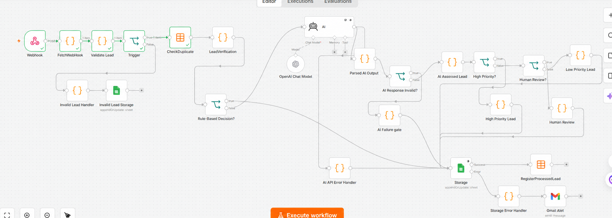
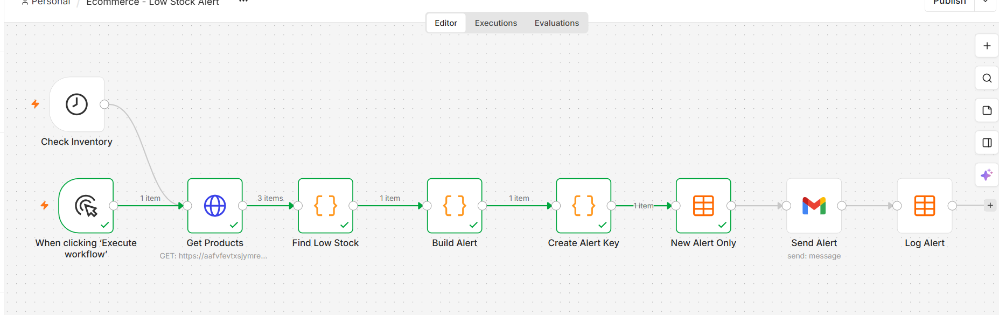

WORKFLOW AUTOMATION
Other n8n automation examples
Lead processing and inventory monitoring examples, separate from the Order Gateway implementations.
OTHER N8N AUTOMATION EXAMPLES
Lead processing and inventory monitoring.
Additional workflow examples for reviewing incoming leads and monitoring low stock, with validation, duplicate checks, human review and notifications. Open either image to inspect the workflow at full resolution.

